AX Raster2BOM - From Floor-Plan Images to Quantitative Analysis
An add-in for a CAD application that reads a floor-plan image, recognizes what is drawn on it, rebuilds it as CAD layers, and produces a quantity take-off that an estimator can review.
Main Goal of the Project
Main Process
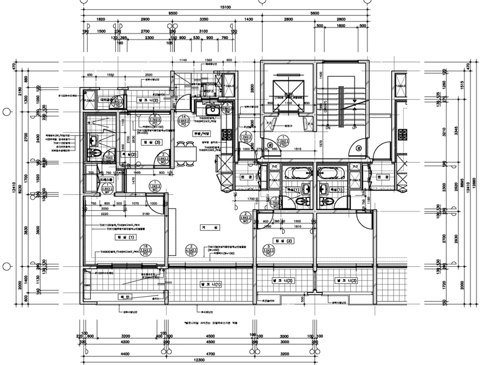
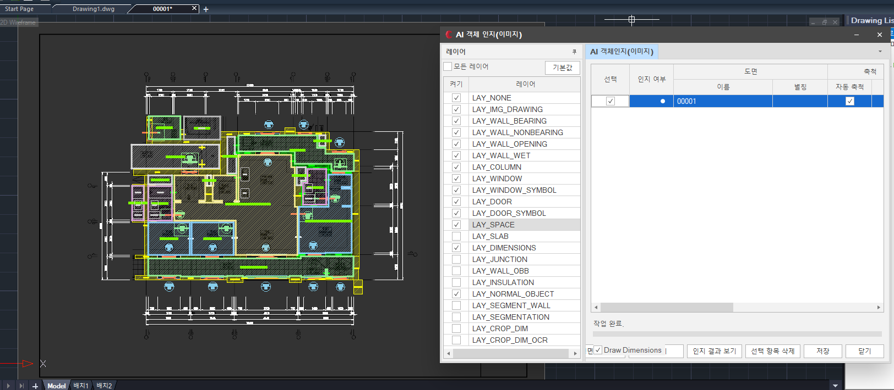
End-to-end MLOps and deployment architecture
flowchart TB
IN[Floor-plan images
single or batch input]:::input --> VAL[Validation, scaling
cleanup and tiling]:::process
VAL --> DATA[(Versioned datasets
labels and metadata)]:::store
subgraph ML[Model development and release]
DATA --> TRAIN[PyTorch training
detection, segmentation and OCR]:::process
TRAIN --> EVAL[Validation
quality and regression checks]:::decision
EVAL -->|approved| REG[(Versioned model artifacts
and release metadata)]:::store
EVAL -->|retrain| TRAIN
end
REG --> PKG[Package inference service
FastAPI and dependencies]:::agent
PKG --> GATE{Deployment target}:::decision
subgraph LOCAL[Option 1 - Local production server]
GATE -->|local| NGINX[nginx
TLS and reverse proxy]:::tool
NGINX --> API1[FastAPI inference service]:::agent
CTL[systemctl]:::tool --> SD[systemd or Supervisor
start, restart and recovery]:::tool
SD -. manages .-> API1
API1 <--> QUEUE1[(Redis and Celery
queue and shared state)]:::store
REG -. approved artifacts .-> API1
end
subgraph AWS[Option 2 - AWS production]
GATE -->|AWS| S3[(Amazon S3
models, inputs and results)]:::store
S3 --> EC2[Amazon EC2
GPU or CPU instance]:::agent
ALB[Public endpoint
TLS and reverse proxy]:::tool --> EC2
CTL2[systemctl]:::tool --> SD2[systemd or Supervisor
service lifecycle]:::tool
SD2 -. manages .-> EC2
EC2 <--> QUEUE2[(Redis and Celery
queue and shared state)]:::store
end
API1 --> RESULT[Structured JSON
CAD layers and quantity tables]:::output
EC2 --> RESULT
RESULT --> CAD[CAD add-in review
Excel export and approval]:::output
subgraph OBS[Observability and operations]
MET[Application metrics
latency, throughput, errors and queue]:::note
HOST[Host and GPU metrics
CPU, memory, disk and VRAM]:::note
LOG[Service and inference logs]:::note
PROM[Prometheus
metrics collection]:::tool
GRAF[Grafana
dashboards and alerts]:::output
CW[Amazon CloudWatch
AWS logs and infrastructure]:::tool
MET --> PROM
HOST --> PROM
PROM --> GRAF
LOG --> GRAF
CW --> GRAF
end
API1 -. telemetry .-> MET
API1 -. telemetry .-> HOST
API1 -. logs .-> LOG
EC2 -. telemetry .-> MET
EC2 -. telemetry .-> HOST
EC2 -. logs and events .-> CW
1. Introduction
Cost estimation starts from drawings, and many of those drawings arrive as images rather than as CAD files. A person has to read every wall, window, door and room, measure them, and type the quantities into a sheet. That takes days on a large plan and the numbers are easy to get wrong.
This project does that reading automatically. The goal is the chain below: an image goes in, and a reviewable quantity table comes out, with every recognized item placed back on the drawing so an estimator can check it.
flowchart LR
A[Floor-plan image]:::input --> B[AI recognition
objects, regions, text]:::process
B --> C[(Structured result
JSON)]:::store
C --> D[Rebuilt CAD layers]:::agent
C --> E[Quantity take-off
tables and Excel]:::output
2. Input and preprocessing
A drawing is added to a project inside the CAD application, either one at a time or as a batch. Before any model runs, each image is validated, rescaled and cleaned, which is what keeps small dimension text and thin wall lines readable at model resolution.
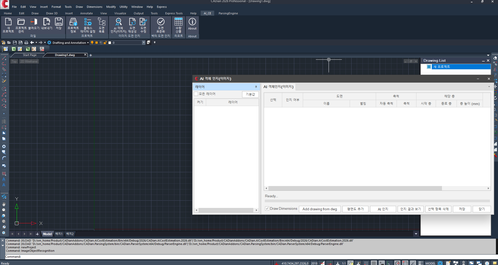
What preprocessing has to solve
- Scale varies. Every drawing is exported at a different size, so results must not depend on the pixel size of the input.
- Small text. Dimensions and room labels are tiny next to the walls, and naive downscaling destroys them.
- Noise. Scans and exports carry speckle, compression artefacts and hatching that confuse edges.
- Large sheets. A block plan does not fit in one pass and has to be processed in parts and reassembled.
3. Models
Three model families run over the prepared image and their outputs are merged into one structured result.
flowchart LR
A[Prepared image]:::input --> D[Detection
objects and classes]:::process
A --> S[Segmentation
regions and walls]:::process
A --> O[OCR
dimensions, marks, labels]:::process
D --> R[(Structured result)]:::store
S --> R
O --> R
R --> V[JSON · visualization
· persistence]:::output
| Model | What it recovers | Framework |
|---|---|---|
| Detection and classification | windows, doors, fixtures, columns and their type | PyTorch |
| Segmentation | rooms, slabs and wall regions, plus wall thickness | PyTorch |
| OCR | dimension text, opening marks and room names | CRNN and Paddle OCR |
The OCR recognizer is a CRNN: a convolutional stack reads the cropped text, a bidirectional sequence layer reads it left to right, and a CTC head turns that into characters. The diagram below is illustrative and does not expose the deployed configuration.
flowchart TB
A[Text crop
1 x 32 x 128]:::input --> B[Convolution + ReLU
32 to 64 to 128 channels]:::process
B --> C[Height aggregation
32 time steps]:::process
C --> D[Bidirectional sequence
256 features]:::process
D --> E[Character projection
K class scores]:::process
E --> F[CTC decoding]:::agent
F --> G[Decoded text
dimensions, marks, labels]:::output
4. Recognition results
Recognized items are written back into the drawing as named layers, so walls, openings, fixtures and spaces can each be shown or hidden. Wall thickness recovered by the model fills the bearing and non-bearing values used when the drawing is rebuilt.
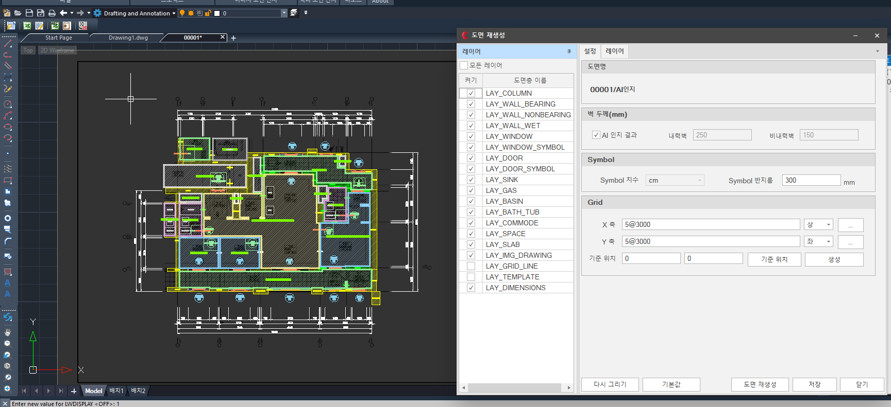
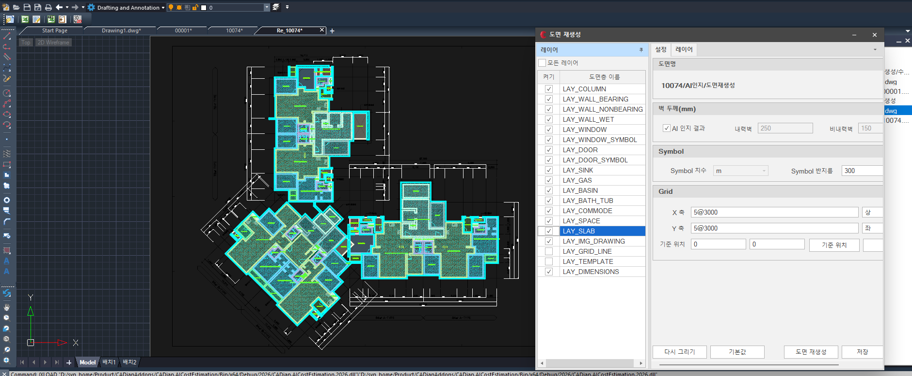
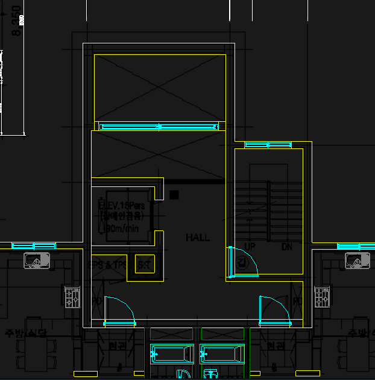
5. Quantity take-off
From the recognized drawing the add-in produces quantity tables, grouped by type and by size, with a subtotal per group and a total per sheet. Walls, windows, doors, general objects, spaces and slabs each get their own tab, and the whole table exports to Excel.
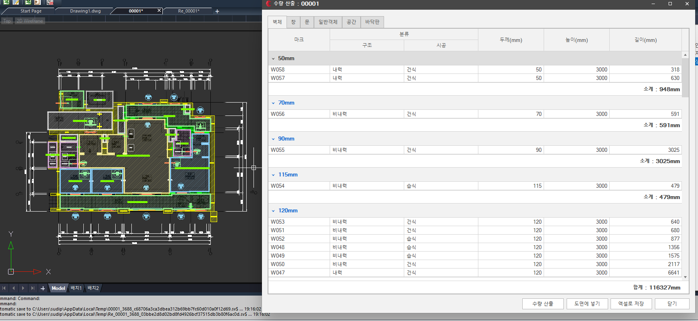
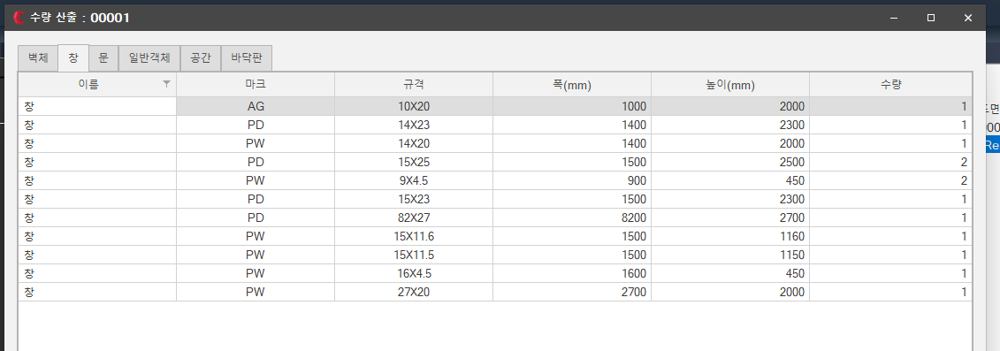
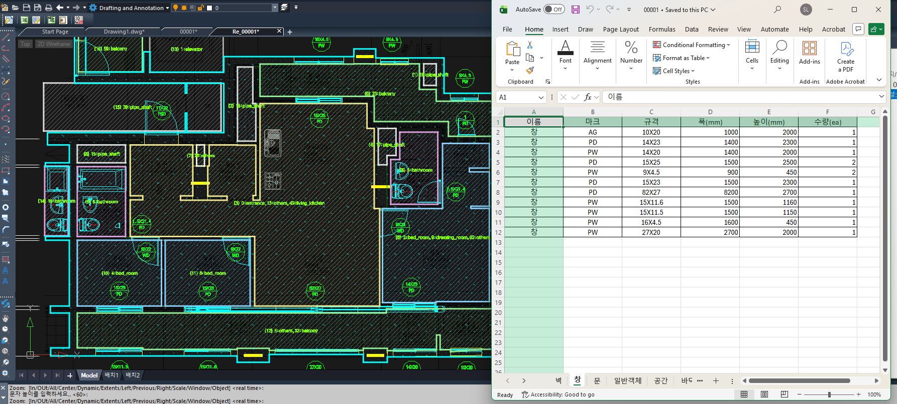
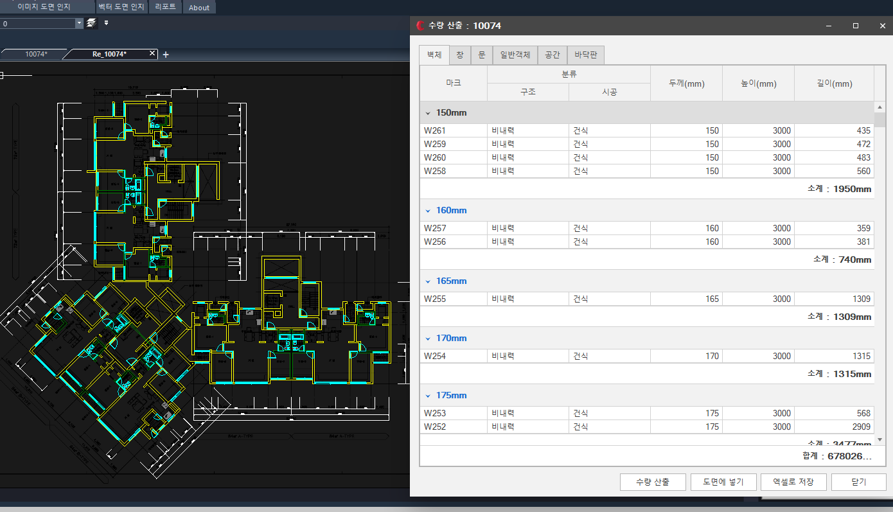
6. Serving and operations
The models run behind a FastAPI service rather than inside the CAD add-in, so the add-in sends a drawing and receives a structured result. The service is supervised by systemd, published through a reverse proxy, and uses Redis for shared state such as queue depth and request history.
flowchart LR
C[CAD add-in
authorized client]:::input --> N[Reverse proxy
nginx]:::process
N --> API[FastAPI service
PyTorch inference]:::agent
MDL[(Approved model
artifacts)]:::store --> API
SD[systemd supervisor]:::tool -.-> API
API --> RDS[(Redis
queue and state)]:::store
API --> ARC[(Result archives)]:::store
API --> MET[Metrics endpoint]:::output
MET --> PRM[Prometheus]:::tool
PRM --> GRF[Grafana and
operator dashboard]:::output
| Component | Role |
|---|---|
| FastAPI | request validation, orchestration, result packaging |
| systemd | process supervision, restart and recovery |
| nginx | reverse proxy in front of the service |
| Redis | shared state: queue depth, request outcomes, event history |
7. Monitoring
A long-running service needs its health to be visible, so request volume, failures, queue usage, database writes, file transfers and GPU memory are all exported as metrics and shown on a dashboard. Prometheus scrapes the service and Grafana reads it, alongside a custom operator dashboard.
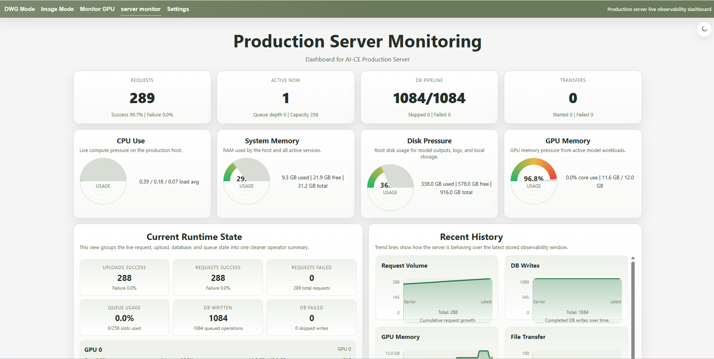
8. Summary
The system turns a floor-plan image into a reviewable quantity take-off. Detection, segmentation and OCR models recover objects, regions and text, the result is written back into the drawing as CAD layers, and quantities are grouped into tables that export to Excel. The models run behind a supervised FastAPI service with Redis-backed state, and its request, database and host metrics are visible on a live dashboard.
Public project overview. Infrastructure values are illustrative. Model workflows describe engineering responsibilities without exposing proprietary processing logic.